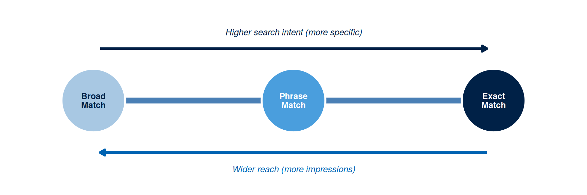
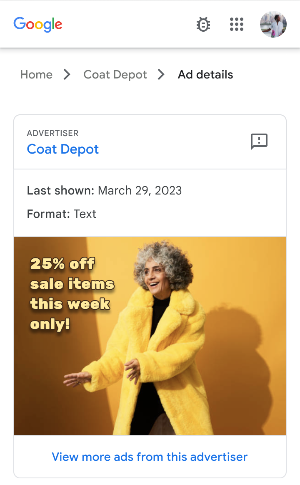

Week 7: Paid Search and PPC
Your Week 6 SEO audit gave you a keyword list and an intent classification. Organic ranking still takes months to arrive, even when every on-page signal is correct, and a new competitor could launch a paid search campaign tomorrow and occupy the top of the results page before your content ever climbs there.
Paid search closes that gap. Bid on the right query at the right price and your ad occupies that first sponsored slot on the day the campaign launches. The trade-off is cost: visibility lasts only as long as the budget runs, and every click costs money whether the searcher converts or leaves.
Three disciplines decide whether that spend is efficient. Match type logic determines who the ad reaches. A negative keyword list blocks the searches you never wanted to pay for. And a Quality Score rewards a relevant ad and a fast landing page with a lower price for the same position. Master those three and paid search delivers Conviction-stage audiences to a well-designed landing page at a predictable cost per acquisition.
This week’s learning design allocates nine hours to the topic: a one-hour lecture, a two-hour tutorial, and six hours of self-directed study. The artefact you produce is a PPC skeleton: a campaign structure with keyword groups, match types, negative keywords, responsive search ad copy, and a landing page audit, ready for a campaign manager to launch.
Your Week 6 keyword research is the starting point. You already know the intent type, the search volume, and the competitive landscape for your primary terms. This week adds match type logic and bid structure on top of that research.
This Week’s Lecture
Lecture Paid Search and PPC
Discussion
1 Introduction & Recall
⏱ 10 min
Aims; poll on match types, negatives, and Quality Score levers.
Acquisition
2 PPC Foundations
⏱ 30 min
Query to auction; match types and negatives; Quality Score; bidding models and budget caps; audience overlays; conversion metrics; scheduling and rotation; reporting basics.
Practice
3 Guided Whole-Class Discussion
⏱ 15 min
Mini case: pick a match type and one negative keyword; propose one Quality Score fix and one safeguard; choose a primary metric.
Assessment
4 Attendance & Exit Check
⏱ 5 min
One-minute exit check: state one safeguard you will apply and why.
Learning Objectives
After studying this chapter, you should be able to:
- Explain how the Google Ads auction determines ad position using bid, Quality Score, and expected impact of extensions.
- Apply keyword match type logic to build a keyword list that targets the right audience intent while protecting budget from irrelevant queries.
- Write a set of negative keywords that protect the campaign from irrelevant traffic.
- Structure a responsive search ad with 6 to 8 headline variants and 4 description variants aligned to the target keyword’s intent.
- Audit a landing page against the four tests that decide whether it converts the Conviction-stage audience paid search delivers: claim match, mobile speed, a single call to action, and message match.
- Calculate and interpret the primary PPC efficiency metrics: click-through rate, conversion rate, cost per click, and cost per acquisition.
- Apply the evidence framework to PPC decisions: classify keyword choices, bid strategy, and landing page decisions as evidence-based, inferred, or assumed.
Lecture: Paid Search and PPC (1 Hour)
Bring your Week 6 SEO mini-audit to this session. The tutorial task builds your PPC skeleton directly from the keyword research it already contains.
Why the Auction Rewards Relevance Over Raw Spend
Paid search advertising on major platforms runs a real-time auction every time a user searches. That auction decides which ads appear, in what order, and at what cost to the advertiser. A higher bid only sometimes buys a higher position, and a modest bid on a genuinely relevant ad regularly beats a large bid on a poor one. Understanding why is the foundation of efficient PPC management.
The auction combines two inputs: the advertiser’s maximum bid (the ceiling they will pay for a click) and Quality Score (a composite measure of the ad’s relevance to the query, its expected click-through rate, and the quality of the landing page it sends traffic to). Multiplying these two produces Ad Rank, the value that decides position. An advertiser with a maximum bid of MVR 5 and a Quality Score of 8 produces an Ad Rank of 40. An advertiser with a maximum bid of MVR 8 and a Quality Score of 4 produces an Ad Rank of 32. The lower bidder wins the better position because their Quality Score carries more weight than the extra money the other advertiser was willing to spend.
That multiplication has a direct financial consequence. A campaign with a Quality Score of 7 or above pays less per click for an equivalent position than a campaign with a Quality Score of 4. Improving Quality Score by improving ad relevance and landing page quality is an efficiency strategy as much as a quality one.
Quality Score is calculated across three components, each scored as above average, average, or below average: expected click-through rate (whether the ad is likely to earn more or fewer clicks than similar ads for the same keyword), ad relevance (how closely the ad copy matches the keyword’s intent), and landing page experience (how relevant, useful, and fast the destination page is).
This design is deliberate, and it has a documented economic logic behind it. Search platforms run what economists call a position auction, analysed independently by Edelman, B., Ostrovsky, M., and Schwarz, M. (, 2007) and Varian, H. R. (, 2007): advertisers compete for a ranked set of slots, and the winner pays a price derived from the bid below theirs rather than their own bid. Two findings from that literature explain the behaviour you will see in your own campaign. First, because you pay a price set by your competitor’s bid, bidding above what a click is genuinely worth to you buys position while destroying margin. Second, weighting the auction by a quality signal rather than by money alone serves the platform’s own interest: an irrelevant ad that nobody clicks earns the platform nothing per impression, so relevance and revenue point the same way. Quality Score is that weighting, made visible to you as a diagnostic.
TipTheory-to-decision bridge
Because Quality Score multiplies the bid rather than sitting alongside it, a low score amplifies every rufiyaa you spend to compensate. Before raising a bid, check whether the Quality Score components are below average first: improving ad relevance and landing page quality is usually the cheaper route to the same position, and raising the bid on a low-scoring campaign is the expensive one.
\[\text{Ad Rank} = \text{Max Bid} \times \text{Quality Score} \;(+\; \text{expected impact of extensions})\]
Keyword Match Types
Keyword match types set how closely a searcher’s query must match your keyword before the ad fires. Google Ads offers three, with equivalents on other platforms: broad match, phrase match, and exact match.
Broad match serves the ad for searches that include variations, synonyms, and related topics of the keyword, well beyond the literal phrase. A broad match keyword “guesthouse Maldives” can trigger for searches including “budget hotel Maldives”, “backpacker hostel Maldives”, or “Maldives resort deals”. Broad match delivers the widest reach and the highest volume of irrelevant queries alongside it, so it demands active negative keyword management and suits campaigns with the budget to absorb some waste while they discover new terms.
Phrase match serves the ad for searches that keep the keyword phrase, or a close variant, in order, while allowing extra words before or after. A phrase match keyword “guesthouse Maldives” triggers for “guesthouse Maldives Malé” or “affordable guesthouse Maldives”, but skips “Maldives guesthouse deals” because the word order breaks. Phrase match sits between broad and exact on both reach and relevance.
Exact match serves the ad only for searches matching the keyword or a close variant, including misspellings, plurals, and implied words. An exact match keyword [guesthouse Maldives] triggers for “guesthouse Maldives” or “guesthouses Maldives”, but skips “guesthouse Maldives Malé” because the extra word falls outside the close-variant rule. Exact match delivers the tightest relevance and the smallest reach.
A well-structured PPC campaign mixes all three deliberately: exact match for high-priority, high-intent keywords where relevance matters most; phrase match for mid-tail terms where some variation is acceptable; and broad match, backed by a strong negative keyword list, where the goal is discovering new relevant queries worth promoting to the exact match list.
NoteFree Tool: Google Ads Transparency Center
Google Ads Transparency Center lets you search and view every active Google Search, Display, and YouTube ad run by any advertiser, anywhere in the world. It needs no account.
What it does in this chapter: Before building your PPC skeleton, search for your direct competitors here. You can see which keywords they are targeting (inferred from ad headlines), the claims their copy makes, and how their calls to action compare with your planned messaging. This competitive intelligence feeds directly into your keyword list and responsive search ad headline variants.
No account needed: Open the URL, search any advertiser name or topic, and browse all active ads immediately.

Where you use it: in your independent study, when you build the two RSA variants (submission item 5). Search two direct competitors, record their headline patterns, primary claims, and calls to action, then flag any gap between their claims and yours in either direction and use it to differentiate your own headlines. It also feeds Forum 1 in the tutorial brief, which asks you to analyse a live sponsored result.
Negative Keywords
Negative keywords stop the ad firing when a search contains a term you have excluded. They are the single most important budget protection mechanism in PPC management. A campaign that launches without a negative keyword list burns a real share of its budget on clicks from searches that have nothing to do with the offering.
Two sources feed the list. Anticipation covers the queries you already know will misfire, such as “free”, “jobs”, “internship”, “DIY”, or “Wikipedia” for a paid programme campaign. Search query data covers the queries that actually triggered the ad once the campaign has run for a while, surfacing mismatches nobody anticipated. Use both: anticipation catches the obvious gaps before launch, and the query report catches the ones only real traffic reveals.
For a guesthouse direct-booking campaign, the anticipation list would include “free”, “hostel”, “backpacker”, “dorm”, “jobs”, and “Wikipedia”, alongside any other term likely to attract searchers who were never considering a paid stay. Two weeks into the campaign, the search query report would surface further candidates from the queries the ad actually matched.
TipTheory-to-decision bridge
Every unfiltered broad or phrase match keyword is an open door to queries you never intended to pay for. Build the anticipation list before launch, since the time it costs is recovered many times over in clicks you never pay for, then review the search query report weekly for the first month and add to the list after each review.
Responsive Search Ads
Responsive search ads (RSAs) let the advertiser supply up to fifteen headline variants (30 characters each) and four description variants (90 characters each). The platform’s machine learning system tests combinations of these elements and shifts delivery toward the combinations producing the highest click-through rate for each query and user context.
Write every headline and description to stand on its own. A headline reading “With House Reef Access” only makes sense paired with “Tidewood Guesthouse Maldives”; if the system pairs it with something else instead, the ad reads as a fragment. Each element needs its own independent claim.
Headline position matters most for the first three slots. The first headline should carry the target keyword or the primary campaign claim. The second should carry the strongest differentiator. The third should carry a call to action, a trust signal, or a supporting claim. The remaining headlines are rotation variants the system tests against each other.
The four description lines (90 characters each) carry the argument the headline opens. The first should expand the primary claim with a specific, verifiable differentiator. The second should supply evidence or a call to action that reinforces the first. The remaining two are rotation variants, written to the same standard.
Pinning, and why to use it sparingly
By default the system is free to place any headline in any position and to leave any asset out of a given combination. Pinning overrides that: pin a headline to position 1 and it appears in position 1 every time the ad serves, or it fails to serve at all.
Pinning buys certainty and costs learning. A legal disclaimer, a regulated price claim, or a brand name that has to lead is worth pinning. Pin most of the set, though, and you collapse the number of combinations the machine learning can test, which is the entire mechanism that lifts click-through rate over time. The working compromise is to build two ad variants and leave at least one of them completely unpinned, so the system has a free hand to find combinations you would never have written yourself. Your Week 7 submission asks for exactly that: two RSA variants, at least one of them unpinned.
Ad Extensions
Extensions (Google Ads now calls them assets) sit below the headline and description and expand how much of the results page your ad occupies, at no extra cost per click. Sitelinks add links to specific pages such as room types or guest reviews. Callouts add short non-clickable phrases such as “No booking fees”. Structured snippets list features under a header such as “Amenities”. Call and location extensions surface a phone number and a map pin.
Extensions matter to the auction as well as to the reader, which is why the full Ad Rank calculation includes an expected impact of extensions alongside bid and Quality Score. Relevant extensions raise Ad Rank without raising the bid, so they improve position efficiency directly. They also enlarge the ad, and a larger ad tends to earn a higher click-through rate, which feeds the expected CTR component of Quality Score in turn.
Landing Page Design for PPC
A click only starts the conversion process. What happens next, on the landing page, decides whether that click-through rate ever becomes a conversion rate. A page that is irrelevant to the ad, slow to load, or vague about its call to action wastes the entire cost of the click that reached it.
Four tests decide whether a landing page is ready to receive paid traffic. It must match the ad’s specific claim: a page promoting the property in general when the ad promised house reef access produces a high bounce rate as visitors conclude they landed somewhere else. It must load in under three seconds on mobile, since each additional second of load time measurably raises bounce rate. It must present a single, clear call to action above the fold, visible before the visitor scrolls. And its headline should echo the ad’s headline, confirming to the visitor that they arrived exactly where they expected.
The landing page is also a Quality Score input. A page that matches the keyword and the ad, loads fast, and serves the visitor well earns a higher Quality Score, which lowers the cost per click for the same ad position.
That gives the Week 6 audit a second commercial life. The same page you audited for organic ranking now sits inside the auction: run it through the SEOmator audit or PageSpeed Insights again, and read the speed and mobile findings as Quality Score evidence over ranking evidence. A slow page cost you position in the organic results; here it costs you money on every click.
PPC Efficiency Metrics
Four metrics decide whether a PPC campaign performs efficiently: click-through rate (CTR), conversion rate, cost per click (CPC), and cost per acquisition (CPA).
Click-through rate is the share of ad impressions that earn a click. A CTR well below the category average signals a relevance problem: the ad is appearing for queries where it fails to earn interest. Benchmark CTR for search advertising varies by category but typically falls between 2 and 10 per cent; a CTR under 1 per cent usually points to a keyword-ad mismatch.
Conversion rate is the share of landing page visits that complete the desired action, whether that is a form submission, a booking enquiry, a purchase, or a download. A high CTR paired with a low conversion rate points to a landing page problem rather than an ad problem: the ad is earning clicks the page then fails to convert. Reading both metrics together is what makes the diagnosis possible.
Cost per click is the average amount paid per click, set by the auction: the bid, the Quality Score, and the competitor activity in that same auction at that same moment. CPC on its own says little; it only becomes meaningful alongside the conversion rate and the value of the conversion it produces.
Cost per acquisition is total campaign spend divided by conversions, and it is the metric that ties the other three together: CPA equals CPC divided by conversion rate. A CPA below the value of the conversion signals a profitable campaign. A CPA above that value signals an unprofitable one, however low the CPC looks in isolation.
A fifth metric appears once revenue enters the picture. Return on ad spend (ROAS) is revenue divided by ad spend, expressed as a multiple: MVR 40,000 of bookings from MVR 10,000 of spend is a ROAS of 4.0x. A ROAS of 1.0x means the campaign recovered exactly what it cost in revenue, before the cost of actually delivering the product. Whether a given ROAS is healthy depends on your margin, so read it alongside CPA rather than in place of it. The interactive calculator below projects both from the same inputs.
Table 1 summarises the four primary metrics and what each one diagnoses.
| Metric | Definition | Problem it diagnoses | Primary lever for improvement |
|---|---|---|---|
| Click-through rate (CTR) | Clicks divided by impressions, expressed as a percentage | Low CTR points to a keyword-ad relevance mismatch or a low Quality Score | Improve ad relevance to keyword; test headline variants; refine match types |
| Conversion rate | Conversions divided by clicks, expressed as a percentage | Low conversion rate points to a landing page problem or an audience intent mismatch | Improve landing page relevance, speed, and call to action; refine targeting |
| Cost per click (CPC) | Total spend divided by total clicks | High CPC points to a low Quality Score, high competition, or overbidding for the position | Improve Quality Score; use more specific long-tail keywords; refine negative keywords |
| Cost per acquisition (CPA) | Total spend divided by total conversions | High CPA points to a campaign generating conversions inefficiently relative to spend | Address the root cause: a low CTR calls for fixing the ad, a low conversion rate for fixing the landing page |
TipInteractive Lab: Campaign ROAS Calculator
Use this calculator to explore how your CPC and conversion rate assumptions affect campaign profitability. Enter the campaign budget, expected CPC, and conversion rate from your PPC skeleton. At what budget does your campaign break even?
Tutorial link: Supports Activity 4 (Metrics & Safeguards): enter the CPC estimate and conversion value from that activity’s table to sense-check whether your CPA target is reachable at your daily budget.
IS link: Supports submission item 8, the CPA target calculation, and gives you the ROAS figure to cite alongside it.
#| '!! shinylive warning !!': |
#| shinylive does not work in self-contained HTML documents.
#| Please set `embed-resources: false` in your metadata.
#| standalone: true
#| viewerHeight: 520
#| components: [viewer]
library(shiny)
library(bslib)
ui <- page_fluid(
h5("Campaign ROAS Calculator", style = "color:#002147; margin-bottom:16px;"),
layout_columns(
col_widths = c(4, 8),
card(
card_header("Inputs"),
sliderInput("budget", "Campaign budget (MVR)",
min = 1000, max = 200000, value = 20000, step = 500, sep = ","),
sliderInput("cpc", "Target CPC (MVR)",
min = 0.5, max = 50, value = 5.0, step = 0.5),
sliderInput("cvr", "Landing page conversion rate (%)",
min = 0.1, max = 20, value = 4.0, step = 0.1),
sliderInput("aov", "Average order value (MVR)",
min = 100, max = 20000, value = 1500, step = 100, sep = ",")
),
card(
card_header("Projections"),
layout_columns(
col_widths = c(6, 6),
value_box(title = "Estimated clicks",
value = textOutput("clicks"), theme = "primary"),
value_box(title = "Estimated conversions",
value = textOutput("convs"), theme = "info")
),
layout_columns(
col_widths = c(6, 6),
value_box(title = "Cost per acquisition",
value = textOutput("cpa"), theme = "warning"),
value_box(title = "ROAS",
value = textOutput("roas"), theme = "success")
),
plotOutput("bar_chart", height = "200px")
)
)
)
server <- function(input, output, session) {
vals <- reactive({
clicks <- floor(input$budget / input$cpc)
convs <- floor(clicks * (input$cvr / 100))
rev <- convs * input$aov
cpa <- if (convs > 0) input$budget / convs else Inf
roas <- if (input$budget > 0) rev / input$budget else 0
list(clicks = clicks, convs = convs, rev = rev, cpa = cpa, roas = roas)
})
fmt <- function(x) formatC(round(x), format = "f", digits = 0, big.mark = ",")
output$clicks <- renderText(fmt(vals()$clicks))
output$convs <- renderText(fmt(vals()$convs))
output$cpa <- renderText(
if (is.infinite(vals()$cpa)) "No conv." else paste0("MVR ", fmt(vals()$cpa)))
output$roas <- renderText(sprintf("%.2fx", vals()$roas))
output$bar_chart <- renderPlot({
v <- vals()
items <- c("Budget (MVR)", "Revenue (MVR)")
amts <- c(input$budget, v$rev)
cols <- c("#4a9edd", if (v$roas >= 1) "#002147" else "#cc3333")
par(mar = c(3, 7, 1, 1), bg = "white")
bp <- barplot(amts, names.arg = items, horiz = TRUE,
col = cols, border = NA, las = 1, xlab = "MVR")
text(amts, bp, labels = paste0("MVR ", fmt(amts)),
pos = 4, cex = 0.85, col = "#333333")
})
}
shinyApp(ui, server)Worked Example: PPC Skeleton for Tidewood Guesthouse
The Week 6 SEO audit built its keyword cluster around “best guesthouse Maldives house reef access” as the primary term, with “affordable guesthouse Maldives snorkelling” and “guesthouse vs resort Maldives price” as support terms. That same cluster becomes the foundation of the PPC campaign: the audience already searching those terms is close to a booking decision, and paid search can put Tidewood in front of them immediately while the SEO content is still climbing the rankings.
The campaign structure has one campaign (“Tidewood Direct Book 2026”), one ad group (“House Reef Snorkelling Malé”), and a keyword list of five terms: the exact match [best guesthouse maldives house reef access], two phrase matches “affordable guesthouse maldives snorkelling” and “guesthouse vs resort maldives price”, and two broad matches carrying negative keyword protection, “guesthouse maldives” and “budget accommodation maldives”. The negative keyword list runs to thirteen terms, comfortably above the ten-term minimum: “free”, “hostel”, “backpacker”, “dorm”, “jobs”, “internship”, “salary”, “what is a guesthouse”, “Wikipedia”, “Airbnb”, “Booking.com”, “TripAdvisor”, and “resort”.
The responsive search ad headlines include “Tidewood Guesthouse Maldives” (keyword-matched, 28 characters), “House Reef, No Boat Needed” (primary differentiator, 26), “Priced Below Nearby Resorts” (comparison claim, 27), “Book Direct, No Booking Fees” (call to action, 28), “International Guests Welcome” (audience signal, 28), and “Check September Availability” (urgency, 28) as a sixth rotation variant. Every one sits inside the 30-character limit, and every one states a complete claim without leaning on another headline. The four descriptions expand the house-reef claim, the price comparison against resorts, the direct-booking saving, and the September availability call to action, each within 90 characters.
The landing page then gets audited against the four tests. Claim match passes: the page headline echoes “Tidewood Guesthouse: House-Reef Snorkelling at a Fraction of Resort Prices”, and the house-reef claim runs as the first body paragraph. The single call to action passes: one two-field booking enquiry form (name and email) with a “Check availability” button, above the fold. Message match passes, since the page headline repeats the ad’s own words. Mobile speed fails at 4.1 seconds against the under-3-second standard, so the fix list carries one item: compress the three guest testimonial photographs below the fold, which are the largest assets on the page.
The budget plans for a CPC of MVR 15-25 (estimated from keyword competition level) at 50 clicks per week, with a CPA target of MVR 800 per booking enquiry against a conversion rate assumption of 5 per cent. That conversion rate assumption is labelled [ASSUMPTION] and gets revised once the first two weeks of campaign data arrive.